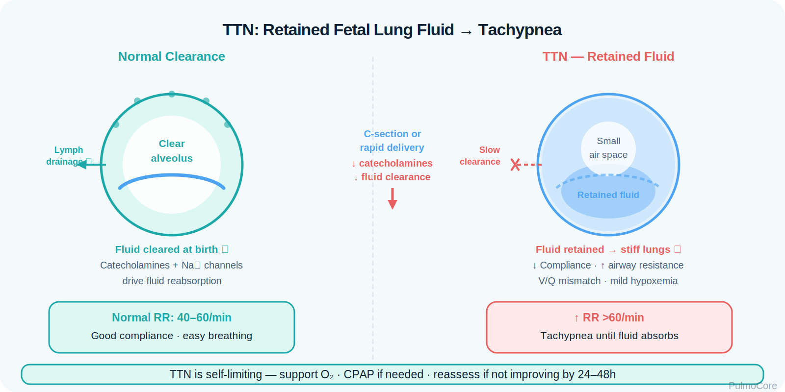
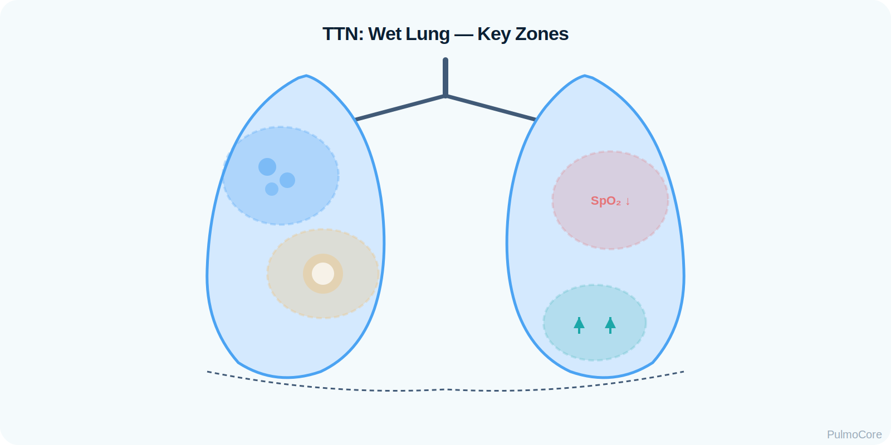
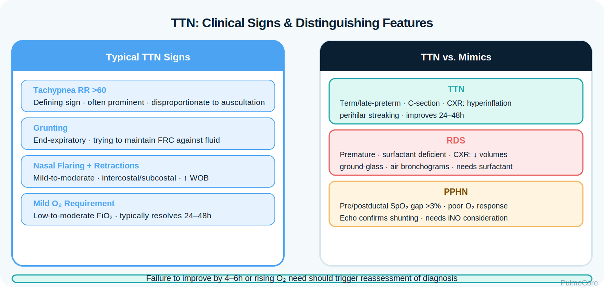
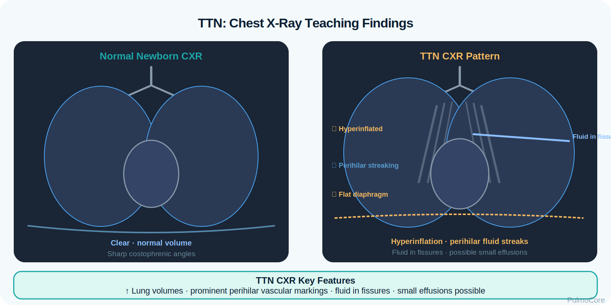

RT Clinical Connection
The RT’s job is to decide whether this looks like uncomplicated delayed fluid clearance or whether the infant is declaring a more serious problem. Trend the baby, not just the diagnosis.
Transient tachypnea of the newborn, or TTN, is a common early neonatal respiratory disorder caused by delayed clearance of fetal lung fluid. This PulmoCore lesson focuses on RT recognition, neonatal assessment, oxygen and CPAP decision-making, radiographic clues, differential diagnosis, and escalation when a “wet lung” pattern does not behave like uncomplicated TTN.
By the end of this TTN module, learners should connect delayed fetal lung fluid clearance with tachypnea, mild-to-moderate oxygen need, chest imaging patterns, supportive care, and red flags that suggest another neonatal emergency.
TTN is often called neonatal “wet lung.” The newborn transitions from fluid-filled fetal lungs to air-filled lungs after birth. When fluid absorption is delayed, the infant breathes faster to maintain ventilation and oxygenation until fluid clears.
The RT’s job is to decide whether this looks like uncomplicated delayed fluid clearance or whether the infant is declaring a more serious problem. Trend the baby, not just the diagnosis.
TTN = term/late preterm infant + early tachypnea + C-section/no labor risk + “wet” or hyperinflated chest x-ray + supportive oxygen/CPAP + improvement over time.
Which statement best describes the primary problem in transient tachypnea of the newborn?
Before birth, fetal lungs contain fluid. During labor and immediately after birth, catecholamine signaling, epithelial sodium channels, lymphatics, and pulmonary blood flow help absorb this fluid. TTN occurs when clearance is delayed, leaving excess fluid in the interstitium and alveolar spaces.

Visual learning: Use this image placeholder for a wet-lung diagram showing retained fluid around alveoli and small airways.| Change | Clinical Effect | RT Meaning |
|---|---|---|
| Retained lung fluid | Fluid remains in interstitial/alveolar spaces. | Baby breathes faster to maintain gas exchange. |
| Lower compliance | Lungs are harder to expand. | Retractions and grunting may appear. |
| Small airway narrowing | Fluid can narrow airways and increase resistance. | Tachypnea may be disproportionate to auscultation findings. |
| Mild V/Q mismatch | Oxygenation may fall. | Supplemental oxygen may be needed. |
| Gradual absorption | Distress should improve over time. | Failure to improve should trigger reassessment. |
Click each hotspot to reveal how that mechanism contributes to TTN.

TTN is most associated with birth circumstances that reduce the normal fluid-clearing effects of labor or occur before full lung fluid transition is complete.
| Risk Factor | Why It Matters | RT Focus |
|---|---|---|
| Cesarean delivery without labor | Less catecholamine-mediated fluid absorption and less thoracic squeeze. | High-yield TTN clue. |
| Late preterm or early term birth | Fluid clearance mechanisms may be less mature. | Monitor transition carefully. |
| Maternal diabetes | Associated with neonatal respiratory transition problems. | Watch oxygen need and glucose-related instability. |
| Male sex or macrosomia | Commonly listed associations. | Risk supports, but does not prove, TTN. |
| Perinatal sedation/anesthesia | May affect respiratory drive/transition. | Differentiate tachypnea from depression/apnea. |
Choose the best category for each item, then check your answers.
TTN usually presents as early neonatal respiratory distress. The infant may look “wet” and tachypneic but often has less severe oxygenation failure than RDS, PPHN, or congenital heart disease.

Visual learning: Use this placeholder for a neonatal respiratory distress signs graphic.| Finding | TTN Pattern | RT Interpretation |
|---|---|---|
| Respiratory rate | Often >60/min. | Tachypnea is the defining sign. |
| Work of breathing | Mild-to-moderate retractions, nasal flaring, grunting. | Trend severity and response to support. |
| Oxygenation | May need low-to-moderate FiO₂. | Escalate if oxygen requirement rises or remains high. |
| Auscultation | May be relatively clear or have crackles. | Do not rely on wheezing/crackles alone. |
| Feeding | Tachypnea may make oral feeding unsafe. | Support NPO/IV fluids per neonatal protocol. |
TTN is a clinical diagnosis supported by imaging and improvement over time. Diagnostic workup should also exclude infection, RDS, air leak, PPHN, and cardiac disease when the course is not typical.

Visual learning: Use this placeholder for TTN chest x-ray findings.| Test/Data | Typical TTN Finding | Why It Matters |
|---|---|---|
| Chest x-ray | Hyperinflation, prominent perihilar vascular markings, fluid in fissures, possible small effusions. | Supports retained fluid pattern. |
| Pulse oximetry | Mild hypoxemia that improves with support. | Guides oxygen titration. |
| Blood gas | Often mild respiratory alkalosis from tachypnea; worsening acidosis is not reassuring. | Trend ventilation and metabolic stress. |
| CBC/blood culture | Consider if infection risk or atypical course. | Pneumonia/sepsis can mimic TTN. |
| Pre/post-ductal SpO₂ | Usually no major split in simple TTN. | Split suggests PPHN or ductal shunting physiology. |
A late-preterm infant born by scheduled C-section develops tachypnea at 1 hour of life. CXR shows hyperinflation, perihilar streaking, and fluid in the fissures. What is the most likely pattern?
Do not anchor on TTN if the infant worsens, needs high oxygen, has abnormal perfusion, or does not improve as expected. TTN is common, but neonatal respiratory distress has dangerous alternatives.
| Condition | Clues Against Simple TTN | RT Concern |
|---|---|---|
| RDS | Prematurity, worsening distress, low volumes/ground-glass CXR. | May need CPAP, surfactant pathway, or higher support. |
| Pneumonia/sepsis | Fever/temperature instability, maternal infection risk, shock, abnormal labs. | Support oxygenation and alert team early. |
| PPHN | Severe hypoxemia, pre/post-ductal split, labile saturations. | Requires urgent neonatal escalation. |
| Pneumothorax | Sudden deterioration, asymmetric chest movement or breath sounds. | Emergency air-leak evaluation. |
| Congenital heart disease | Cyanosis out of proportion, murmur, poor pulses, shock, poor response to oxygen. | Needs cardiac evaluation. |
| Meconium aspiration | Meconium-stained fluid, coarse breath sounds, patchy infiltrates/hyperinflation. | Can progress to air trapping or PPHN. |
Uncomplicated TTN should trend better. Red flags mean the infant may have a different or additional problem.
| Red Flag | Why It Matters |
|---|---|
| FiO₂ need rising or remaining high | Simple TTN usually has mild-to-moderate oxygen need. |
| Severe retractions, apnea, exhaustion, or poor tone | Suggests respiratory failure risk, not mild transition delay. |
| Persistent cyanosis or poor response to oxygen | Consider PPHN or congenital heart disease. |
| Shock, poor perfusion, fever, hypothermia | Consider sepsis or serious systemic disease. |
| Metabolic acidosis or worsening blood gas | Indicates physiologic stress or poor ventilation/perfusion. |
| No improvement by expected timeframe | Reassess the diagnosis and treatment plan. |
TTN management is supportive. The RT helps maintain oxygenation, reduce work of breathing, monitor response, and escalate when the infant does not follow the expected improving course.
| Intervention | When It Helps | RT Decision Point |
|---|---|---|
| Thermoregulation/neutral thermal environment | Reduces metabolic demand. | Cold stress increases oxygen consumption. |
| Supplemental oxygen | For hypoxemia. | Titrate to neonatal target range per unit policy. |
| CPAP | For persistent tachypnea/retractions or oxygen need. | Improves FRC and reduces WOB. |
| NPO/IV fluids or gavage feeding | When RR is high and aspiration risk exists. | Tachypnea makes oral feeding unsafe. |
| Antibiotics/workup | If infection cannot be excluded. | TTN is a diagnosis of exclusion when sepsis risk exists. |
Select the steps in the best general order for an infant with suspected TTN and mild-to-moderate distress.
TTN should not be managed passively if the baby is tiring, hypoxemic, or worsening. CPAP is common for noninvasive support; higher-level care may be needed if gas exchange or work of breathing deteriorates.
For a board-style item, do not choose bronchodilators, diuretics, or routine intubation for stable TTN. Choose supportive oxygen/CPAP and reassessment, unless red flags point to another diagnosis.
The RT is central to neonatal transition assessment, oxygen delivery, CPAP setup, monitoring, communication, and recognizing when “TTN” is becoming something more serious.
| RT Task | What to Assess or Do | Why It Matters |
|---|---|---|
| Assess WOB | RR, retractions, nasal flaring, grunting, apnea, fatigue. | Tracks severity and support need. |
| Monitor oxygenation | Continuous SpO₂; pre/post-ductal when indicated. | Detects hypoxemia and shunting physiology. |
| Support breathing | Oxygen hood/cannula/CPAP per protocol. | Maintains oxygenation and reduces WOB. |
| Interpret trend | Compare current status to expected TTN improvement. | Worsening trend triggers escalation. |
| Communicate clearly | Report support level, FiO₂ trend, WOB, blood gas, imaging clues. | Improves neonatal team decisions. |
This guided case reveals one stage at a time. Make the RT decision, review feedback, and continue.
A 38-week newborn is delivered by scheduled C-section without labor. At 45 minutes of life, the infant has tachypnea and mild retractions.
Decision Question: What is the priority RT action?
Chest x-ray shows hyperinflation, prominent perihilar streaking, and fluid in the fissures. The infant requires 30% oxygen.
Decision Question: Which interpretation best fits this data?
After 2 hours, RR remains 86/min with persistent grunting and retractions despite oxygen. SpO₂ improves but only with increasing FiO₂.
Decision Question: What should the RT anticipate next?
Four hours later, the infant has worsening acidosis, poor perfusion, and temperature instability. FiO₂ need is now 60%.
Decision Question: What does this change mean?
Answer each question to complete this activity. Answer choices shuffle each time the lesson opens.
Which delivery history most strongly supports TTN in a term infant with early tachypnea?
Which chest x-ray pattern is most consistent with TTN?
An infant with suspected TTN has RR 84/min and persistent grunting despite low-flow oxygen. Which support should the RT anticipate?
Which finding should make the RT question uncomplicated TTN?
TTN is delayed clearance of fetal lung fluid after birth, causing rapid breathing and increased work of breathing until the fluid clears.
Labor helps trigger lung fluid absorption. When labor is absent or shortened, fluid clearance may be delayed.
No. TTN is retained lung fluid and is usually transient. RDS is usually surfactant deficiency, often in premature infants, and may worsen without more intensive support.
Most treatment is supportive: warmth, oxygen as needed, CPAP if needed, safe feeding decisions, and monitoring until fluid clears.
Worry if the infant has rising FiO₂ need, severe distress, apnea, poor perfusion, shock, temperature instability, pre/post-ductal saturation differences, or worsening blood gas.
Not always. Significant tachypnea increases aspiration risk, so oral feeds may be held until breathing is safer.
TTN is a common neonatal transition disorder caused by delayed fetal lung fluid clearance. It usually presents soon after birth with tachypnea, mild-to-moderate distress, and supportive-care needs. The RT’s role is to support oxygenation, reduce work of breathing, and recognize when the infant is not following the expected improving course.
Terms are stored once and can power inline tooltips, glossary entries, and flashcards.
Click the card to flip it. Use Term → Definition or Definition → Term mode. Mark known cards to move them into the completed pile.